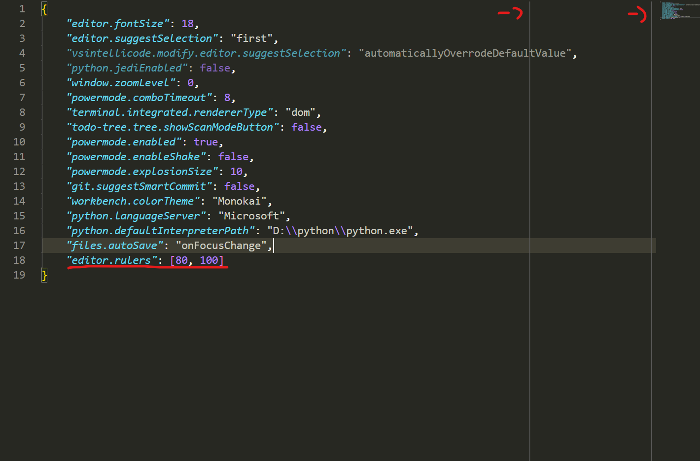

單純想要記錄一下我在VS Code上安裝的套件跟一些設定，以後換電腦時可以快速設定。
套件
flask-snippets
一看才發現原來我有裝這個套件，就可以輸入快捷鍵產生特定指令，好像方便但是我根本沒用過…
慢慢試著來用吧，不然flask有些指令真的很繁瑣。
Jinja
幫程式碼上色，比較好辨識程式碼區塊，但我還是覺得很亂就是了。
Markdown Preview Enhanced
就Markdown。
Power Mode
很好玩的套件，在打程式時會出現些特效，讓寫程式碼比較不會那麼單調，但有些人可能會覺得很礙事。
當初我也是花很多時間找到這個套件呢，可以開啟Json設定相關屬性，但是我也忘記在哪邊弄了，就直接在VS Code的settings設定吧。
1 | Enable Shake: 打字時是否晃動，建議關掉。 |
Todo Tree
可以看到在程式碼TODO的註解處，我通常是用來註記暫時修改的地方，以免自己忘記。
TabNine
很猛的AI提示字插件，看你常打哪些指令或字就會出現相關的，並且它會推測你下一行指令會是什麼，真的不知道怎麼寫的呢，當初用了一段時間，雖然很方便，但是VS Code本來的提示字會被覆蓋掉，最後我還是沒有在用。
Bracket Pair Colorizer
會將成對的括弧用顏色加以標記，比較不會找錯括弧，但是配上Monokai樣式會有點花俏，要花點時間習慣。
Indenticator
會在區塊範圍內用線條顯示，比較好找到區塊範圍，但是配上Monokai樣式會有點花俏，要花點時間習慣。
cdnjs
直接用插件把library導入至文件中。
indent-rainbow
tab的空格會有顏色
相關設定
Color Threme
Monokai 我的最愛。
font
大小設18。
auto save
自動儲存檔案，改成onFacusChange。
rulers
在設定行數的位置畫上線，用來提醒自己程式碼行數過多，像圖片中就是設定在80和100行的位置。
Word Wrap
改成on，若超過rulers設定的行數，會自行換行。
